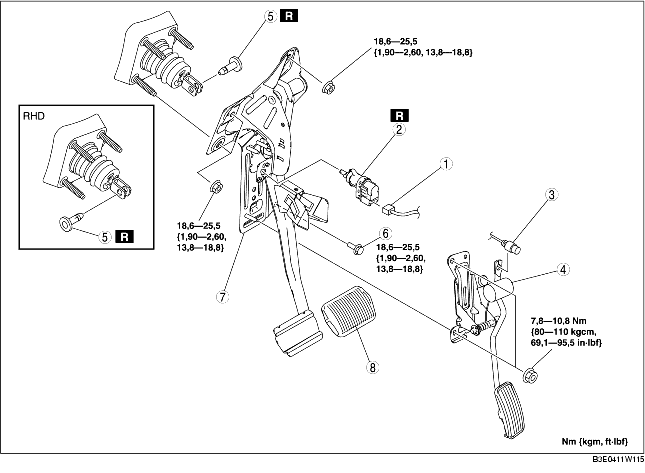

1. LHD: Verwijder de accu en de accuhouder. (Zie VERWIJDEREN/PLAATSEN ACCU [ZJ, Z6].) (Zie VERWIJDEREN/PLAATSEN ACCU [LF].)
2. Neem de remleiding los (zijde hoofdremcilinder). (Zie VERWIJDEREN/PLAATSEN HOOFDREMCILINDER.)
3. Verwijder de onderdelen in de aangegeven volgorde, zie de tabel.
4. Plaats de onderdelen in omgekeerde volgorde.
5. Stel de gaskabel af. (Zie CONTROLE/AFSTELLEN GASKABEL [ZJ, Z6].) (Zie CONTROLE/AFSTELLEN GASKABEL [LF].)

.
|
1
|
Stekker remlichtschakelaar
|
|
2
|
Remlichtschakelaar
|
|
3
|
Gaskabel
|
|
4
|
Gaspedaal
|
|
5
|
Gaffelpen
|
|
6
|
Bout (LHD)
|
|
7
|
Rempedaal
|
|
8
|
Pedaalrubber
|
1. Verwijder de bevestigingsmoeren van het rempedaal.
2. Verplaats de rembekrachtiger naar voren zodat de gaffel niet tegen het rempedaal komt.
3. Verwijder het rempedaal.
1. LHD: Breng de openingen in het rempedaal en de gaffel in lijn en plaats een nieuwe gaffelpen.
2. RHD: Breng de openingen in het rempedaal en de gaffel in lijn en plaats een nieuwe gaffelpen.
3. Controleer of de gaffelpen volledig in de gaffel is geplaatst.
1. Controleer het rempedaal. (Zie CONTROLE REMPEDAAL.)
2. Laat het rempedaal helemaal vrij en plaats een nieuwe remlichtschakelaar in de montage-opening.
3. Zet de remlichtschakelaar vast door deze 45° linksom te draaien.